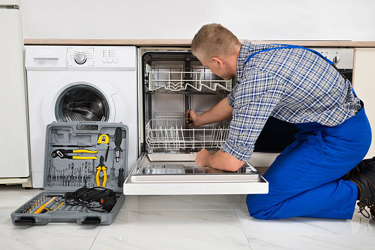

Yorkville New York
info@usaappliancerepair.pro
Yorkville New York
info@usaappliancerepair.pro

Professional appliance repair in Yorkville New York ! We specialize in fixing all household appliances quickly and affordably. Call us today for trusted repairs that restore functionality and peace of mind.
Click Here To Call Us (877) 848-1711Looking for reliable appliance repair services in Yorkville New York ? You've come to the right place! Our team specializes in repairing a wide range of household appliances, ensuring your home runs smoothly. From malfunctioning refrigerators and dishwashers to faulty washers and dryers, we have the expertise to fix it all. With years of experience, our technicians deliver quick and efficient solutions to save you time, money, and stress.
At , we understand how inconvenient a broken appliance can be. That’s why we offer same-day repair services across Yorkville New York to get your appliances back in working order as soon as possible. We service all major brands, including Samsung, LG, Whirlpool, GE, and more, ensuring top-notch repairs with genuine replacement parts.
What sets us apart is our commitment to customer satisfaction. We provide upfront pricing with no hidden fees, so you’ll know exactly what to expect. Our licensed and insured technicians use advanced diagnostic tools to pinpoint issues and offer long-lasting solutions. Whether it’s a simple fix or a complex repair, we’re your trusted appliance repair partner in Yorkville New York .
Contact us today to schedule your appliance repair service in Yorkville New York and experience the difference! Reliable, fast, and affordable—choose for all your appliance repair needs.
Residential & commercial Appliance Repair
Quality services at affordable prices
Immediate 24/ 7 emergency services


When it comes to reliable, fast, and professional appliance repair in Yorkville New York our team of certified experts is second to none. Whether you need refrigerator repair, washing machine service, or oven troubleshooting, we have the expertise to get your appliances working like new again. Our technicians are fully trained in handling all major appliance brands, ensuring we provide top-notch service every time.
Expert Technicians and Fast Service
Our Yorkville New York appliance repair experts are skilled in diagnosing and repairing a wide variety of household appliances. We understand how important your appliances are to your daily routine, which is why we offer quick, efficient repairs to minimize disruptions to your day-to-day life.
Affordable and Transparent Pricing
We pride ourselves on offering affordable, upfront pricing for all appliance repair services. You’ll never face hidden fees or surprise charges. We provide clear, detailed quotes before starting any work, so you know exactly what to expect.
Customer Satisfaction Guaranteed
Our priority is your satisfaction. We stand behind the quality of our work, offering a satisfaction guarantee on all repairs. If any issue arises after our service, we’re committed to making it right.
Choose our Yorkville New York appliance repair experts for fast, reliable, and affordable solutions that you can trust. Call us today to schedule your appointment and experience the difference!
Residential & commercial Appliance Repair
Quality services at affordable prices
Immediate 24/ 7 emergency services
As technology evolves, so do the appliances in our homes and businesses. Our Smart Appliance Repair Services are designed to address the complexities of modern smart devices, including refrigerators, ovens, and laundry machines that integrate with Wi-Fi and smart home systems. Our skilled technicians stay up-to-date with the latest technology and can troubleshoot connectivity issues, app malfunctions, and other problems unique to smart appliances. Choosing us means you will receive expert service tailored to the evolving needs of your home or business. Trust our expertise in Yorkville New York for all your smart appliance repairs.

Portable appliances provide convenience, from mini-fridges to compact microwaves. However, they can encounter issues over time. Our Portable Appliance Repairs address everything from power failures to heating problems, ensuring your appliances serve you well. We specialize in diagnosing issues promptly and providing effective repairs, allowing you to continue enjoying the flexibility these appliances offer. Trust our expertise for your portable appliance needs, and get ready to enjoy convenience without interruption .

Energy efficiency is not just a trend; it's a necessity for today’s environmentally-conscious consumers. Our Energy-Efficient Appliance Repairs focus on helping you maintain your high-efficiency appliances. We address specific issues that may cause inefficiencies in your washing machines, refrigerators, and other eco-friendly units. Our team is committed to providing repairs that help you conserve energy while prolonging the life of your equipment. By prioritizing energy efficiency, we help you save money and reduce your carbon footprint. Choose us for expert repair services that align with your eco-conscious values .

Appliance emergencies can occur at any time, disrupting our daily routines and business operations. Our Emergency Appliance Repair Services are designed to provide immediate assistance for urgent appliance breakdowns. Whether it's a refrigerator that stopped cooling on a hot summer day or an oven that failed right before a big event, we are here 24/7 for your urgent repair needs. Our skilled technicians come equipped with the necessary tools and expertise to diagnose and fix problems on the spot. Trust us to get your appliances back up and running without delay .
Preventive care is key to extending the life of your appliances. Our Appliance Maintenance Plans offer comprehensive care to keep your appliances in peak condition. With regular inspections and tune-ups from our trained technicians, you can catch potential issues before they become costly repairs. Our plans are tailored to meet your specific needs, providing peace of mind and enhanced appliance performance. Trust us to offer quality maintenance services designed to protect your investments and prolong the lifespan of your appliances in Yorkville New York .
Proper installation is crucial for your appliances to function optimally. Our Appliance Installation and Setup Services ensure that your new appliances are installed correctly and safely. Our skilled technicians are experienced in handling a variety of home and commercial appliances, providing expert setup along with any necessary repairs. We take the hassle out of appliance installation, offering seamless service that prioritizes quality and safety. Count on us for top-notch installation and repair services tailored to your needs and experience the quality of professional service.

Gas appliances require specialized knowledge for safe and effective repairs. Our Gas Appliance Repair Services provide essential solutions to ensure your gas equipment operates safely and efficiently. From stoves to water heaters, our trained technicians understand the intricacies of gas systems and are adept at troubleshooting and repairing any issues. We prioritize your safety and the efficiency of your appliances, offering reliable service with a focus on quality and customer satisfaction. Trust us as the go-to service provider for gas appliance repairs .

Control panel issues can render even the best appliances unusable. Our Appliance Control Panel Repair Services specialize in diagnosing and repairing problems related to appliance interfaces, whether it's a washing machine, microwave, or dishwasher. Our skilled technicians have the knowledge to interpret error codes, fix touch screens, and restore the functionality of your appliances. We understand that having a working control panel is essential for the operations of your appliances, so we prioritize quick and effective repairs. Trust our expertise to get your appliance control panels operational again in Yorkville New York .

Vintage and antique appliances hold charm and nostalgia, but they may need specialized care due to their unique construction. At Appliance Repair, we offer vintage and antique appliance repair services that respect the integrity of your treasured items. Our technicians possess in-depth knowledge of older appliance models, utilizing traditional and modern techniques to restore them without compromising their character. With our focus on craftsmanship and attention to detail, we provide exceptional service for preserving your vintage treasures . Choose us for your antique repair needs.
Years Experience
Expert Technicians
Satisfied Clients
Compleate Projects
At Appliance Repair, we take pride in being the trusted choice for all your appliance repair needs across Yorkville New York . With years of experience and a team of certified technicians, we provide fast, reliable, and affordable services to restore the functionality of your household appliances. Whether it's a malfunctioning refrigerator, a broken washing machine, or a faulty oven, we have the skills and expertise to get your appliances working like new again.
We understand how important your appliances are to your daily life. That's why we prioritize fast response times, often offering same-day service in Yorkville New York ensuring that your home runs smoothly without long disruptions. Our technicians are equipped with state-of-the-art tools and are continuously trained on the latest appliance technologies to offer the highest quality repairs.
We are committed to providing transparent pricing with no hidden fees, so you can have peace of mind knowing exactly what to expect. Plus, our work is backed by a satisfaction guarantee, giving you confidence that the job will be done right the first time.
Our exceptional customer service and quick turnaround make us the go-to choice for appliance repair in Yorkville New York . When you choose Appliance Repair, you’re choosing reliable, trustworthy experts who put your convenience first. Contact us today for all your appliance repair needs and experience the difference.
In today's fast-paced world, a malfunctioning refrigerator can cause significant inconvenience, leading to spoiled food and wasted resources. At Appliance Repair, we specialize in refrigerator repair services that prioritize efficiency and quality. Our expert technicians are well-versed in diagnosing and repairing all types of refrigerators, from standard models to advanced smart fridges. With our comprehensive knowledge of refrigerator components and technologies, we ensure timely and effective repairs, allowing you to preserve your food and peace of mind. Choose us for our commitment to customer satisfaction, fast service, and reliable repairs that stand the test of time .
A malfunctioning washing machine can put a serious dent in your laundry routine. Whether your machine won't spin properly or is leaking water, we’re here to help with our professional Washing Machine Repair services . We pride ourselves on our meticulous attention to detail and prompt response times. Our technicians have extensive training and knowledge in addressing a wide variety of washer issues, including front-load and top-load machines. We offer fast, efficient repairs at competitive rates, ensuring you're back to your regular laundry tasks as soon as possible. By choosing our services, you not only receive expert repairs but also valuable advice on how to maintain your machine's performance long-term. Trust us to restore your washing machine to optimal working condition .
A dryer breakdown can leave you with piles of damp laundry and a lot of frustration. Our Dryer Repair Services focus on restoring your appliance’s efficiency, so you can get back to your regular laundry routine. We handle issues such as insufficient drying, unusual noises, and overheating. Each of our technicians is skilled in diagnosing problems and carrying out effective repairs swiftly. What sets us apart is our passion for quality service and our attention to detail. We believe that every customer deserves the best, which is why we ensure that every repair is done right the first time. Trust us for your dryer repair needs, and enjoy a hassle-free laundry experience.
When your dishwasher stops working, it can lead to a mountain of dirty dishes and frustration. Our Dishwasher Repair Services are designed to alleviate your inconvenience by providing quick and effective repairs for all models. Our qualified technicians can tackle any issue from leaks and drain problems to electronic malfunctions. We understand that time is valuable, which is why we offer flexible scheduling and strive for same-day services. With our commitment to honesty and transparent pricing, you'll know exactly what to expect when you choose us. Count on our appliance repair specialists in Yorkville New York to restore your dishwasher’s efficiency and reliability.
Cooking without a fully functioning oven or stove can be a daunting challenge. Our Oven and Stove Repair Services encompass a wide range of brands and models, ensuring that your cooking appliances are safe and operational. From oven not heating to stovetop ignition issues, our certified technicians can diagnose and resolve all kinds of problems efficiently. We prioritize customer satisfaction with quick response times and guaranteed repairs. Our experienced team is dedicated to ensuring that your appliances work optimally for all your culinary needs. When you need reliable oven and stove repairs trust us for swift service and high-quality results.
Is your microwave not heating, or do you hear strange noises while it's running? Our Microwave Repair services in Yorkville New York are here to assist you. As a quick and convenient cooking appliance, malfunctioning microwaves can be quite the hassle in your day-to-day life. Our technicians are fully equipped to service a broad range of microwave brands and models, ensuring you receive the most reliable repairs. From issues related to door switches to circuit board replacements, we tackle it all. Our team values your time and strives for a quick turnaround, allowing you to get back to heating meals in no time. For top-notch microwave repair trust our expert repair service.
A malfunctioning garbage disposal can lead to inconvenient and messy situations in your kitchen. Our Garbage Disposal Repair service focuses on identifying the cause of the malfunction, be it a jam, electrical issue, or corrosion. Our qualified technicians assess the problem carefully and offer effective solutions to restore functionality swiftly. As part of our commitment to excellent service, we guide you on proper usage to avoid future issues. We are dedicated to making your kitchen a pleasant environment, which is why we are the preferred choice for garbage disposal repairs . Trust us to deliver quick, reliable, and high-quality repairs.
Frozen food storage is vital for both homes and businesses. When your freezer fails, you risk losing valuable food and money. Our Freezer Repair Services are here to help you avoid these losses with fast, reliable repairs. Our licensed technicians specialize in diagnosing and fixing a range of freezer issues, whether it's temperature fluctuation or frost buildup. We know the urgency of freezer repairs, which is why we offer prompt service and flexible appointment slots that suit your schedule. With a commitment to customer satisfaction, we ensure that your freezer will be running efficiently in no time.
Ice makers play a crucial role in businesses and households alike. When yours breaks down, it can affect both comfort and service delivery. Our Ice Maker Repair Services provide solutions for a variety of issues, including insufficient ice production and leaks. Our knowledgeable technicians are adept at working with both standalone units and those built into refrigerators. With our prompt diagnostics and repairs, you can trust us to get your ice maker operational quickly. Customer satisfaction is our top priority; we provide warranties on our repairs and ensure every job is done right the first time.
A non-functional range hood can lead to unpleasant kitchen odors and increased grease build-up. At Appliance Repair, our range hood repair services ensure your kitchen remains fresh and clean. We specialize in diagnosing issues such as poor ventilation, motor failures, and electrical problems. Our technicians are well-equipped to handle a wide variety of range hood models, providing prompt and effective repairs. We believe in transparent pricing and customer loyalty, assuring you of our dedication to quality service in Yorkville New York . Choose us to keep your kitchen air clean.
In the world of food service, a functional commercial refrigerator is crucial to maintaining the quality and safety of your products. At Appliance Repair, we provide top-tier commercial refrigerator repair services tailored to your business needs. Our skilled technicians understand the importance of prompt service and minimal downtime, and they are equipped to handle complex commercial fridge systems, from reach-in to walk-in coolers. We offer flexible scheduling and unparalleled expertise, making us the best choice for businesses . When it comes to the health of your inventory, trust us.
Running a restaurant requires reliable kitchen appliances that operate at peak efficiency. Our Restaurant Appliance Repair Services encompass everything from ovens and ranges to dishwashers and refrigerators. We understand the fast-paced environment of culinary business and the urgency of appliance repairs. Our team of certified technicians is well-trained in the specific demands of commercial kitchen appliances, offering targeted solutions that minimize disruptions. We believe in providing high-quality service at competitive prices, ensuring your restaurant kitchen operates smoothly and safely .
Industrial dishwashers are heavy-duty machines that demand specialized knowledge for effective repairs. Our Industrial Dishwasher Repair services cater to commercial kitchens with high demands for cleanliness. Our certified technicians are trained to troubleshoot complex issues and perform high-quality repairs swiftly, ensuring your operations are not interrupted. We understand the importance of hygiene and efficiency in a commercial setting, which is why we take pride in our timely and reliable service. Trust us with your industrial dishwasher repair needs in Yorkville New York and maintain the cleanliness and efficiency your business requires.
Efficient cooking equipment is crucial in commercial kitchens. Our Commercial Oven and Range Repair services ensure that your kitchen never skips a beat. Our certified technicians work meticulously to diagnose problems, whether they involve temperature deviations, electronic malfunctions, or structural issues. We commit to quality and reliability, ensuring that your cooking appliances are restored to peak performance quickly, minimizing downtime. Let us help you maintain your kitchen's efficiency and productivity by choosing us for your commercial oven repairs .
Maintaining the integrity of your food storage is non-negotiable, especially in commercial settings. Our Walk-In Freezer Repair Services provide specialized solutions to ensure your large storage units operate correctly. Our trained technicians are adept at diagnosing issues such as temperature fluctuations, compressor failures, and door seal problems. We prioritize quick and efficient repairs to minimize food loss and ensure compliance with health regulations. Choose us for our expertise and commitment to quality service, and ensure your walk-in freezer maintains the right conditions in Yorkville New York .
Dependable laundry equipment is crucial for businesses in the cleaning industry, hospitality, and more. At Appliance Repair, we offer specialized laundry equipment repair services designed for commercial applications. Our technicians are well-versed in the mechanics of industrial washers, dryers, and other laundry equipment. We provide comprehensive diagnostics and repair solutions that enhance the lifespan of your appliances and maintain high productivity standards. With a focus on customer satisfaction, we adapt our services to the unique challenges of your business . Rely on us for exceptional service.
As homes become increasingly connected, the integration of HVAC and appliances is vital for efficiency. Our HVAC and Appliance Integration Repairs in Yorkville New York focus on bringing seamless functioning to your home's systems. We tackle issues related to your heating, ventilation, and air conditioning systems along with connected appliances, ensuring they work in harmony. Whether you're experiencing control panel issues or need a complete system troubleshooting, our certified technicians are ready to assist. Trust us to enhance your home’s comfort and convenience through expert repair services in Yorkville New York .
Bakeries rely heavily on a variety of specialized equipment that must function properly to ensure the quality of their products. Our Bakery Equipment Repair Services in Yorkville New York cover ovens, proofers, mixers, and more, providing comprehensive solutions tailored to meet the unique demands of the baking industry. Our experienced technicians understand the urgency of repairs in this fast-paced environment, making prompt response and service our priority. With our commitment to quality and customer satisfaction, bakery owners can rely on us to keep their equipment operating smoothly, ensuring that production schedules are met without delay in Yorkville New York .
Food trucks require reliable appliance performance to meet customer demands on the go. At Appliance Repair, we understand the specific challenges mobile kitchens face, and we provide comprehensive food truck appliance repair services. Whether you have issues with your refrigeration units, cooking appliances, or electrical systems, our skilled technicians are prepared to get you back on the road quickly. We prioritize your business’s needs and tailor our service to minimize downtime and maintain quality. For efficient food truck appliance repairs in Yorkville New York trust us to service your mobile kitchen effectively.
When your refrigerated display case malfunctions, it can lead to food spoilage and lost sales opportunities. Our Refrigerated Display Case Repair Services focus on keeping your display equipment functioning optimally. Our technicians are trained to handle a variety of issues, including temperature control problems, compressor failures, and electrical malfunctions. We prioritize quick response times and expert repairs to minimize your product loss and maximize your operating efficiency. Choose our reliable service for all your refrigerated display case needs.
When it comes to high-end appliances, expert repair is essential. Our High-End Appliance Repair services cater specifically to luxury brands, ensuring that your premium appliances receive the care they deserve. Our technicians are trained to handle the distinctive features and complexities of high-end equipment, whether it’s kitchen ranges, refrigerators, or smart appliances. We treat your appliances with the utmost respect and care, providing meticulous service that aligns with their quality. Choose excellence in appliance repair—choose us for your luxury appliance needs .
When your appliances break down, you need a trusted, affordable repair service to restore them quickly and efficiently. At , we specialize in reliable appliance repair in Yorkville New York ensuring your home or business stays running smoothly. Whether it's a malfunctioning refrigerator, stove, washer, or dryer, our expert technicians have the experience and tools to get your appliances back in top condition.
We understand the importance of having properly functioning appliances, which is why we offer fast, reliable, and affordable appliance repairs in Yorkville New York . Our team is equipped to handle all types of appliance issues, from minor repairs to major fixes, providing a hassle-free experience for you.
At , we are committed to offering competitive pricing without compromising on quality. Our transparent pricing model means no hidden fees or surprises. We also offer same-day service for emergencies, so you don’t have to wait long for a fix.
With years of experience serving homeowners and businesses across Yorkville New York we have built a reputation for reliability and customer satisfaction. Whether it’s routine maintenance or emergency repairs, we are your go-to appliance repair company in Yorkville New York .
Don’t let broken appliances disrupt your daily routine. Contact today for affordable and reliable appliance repair services in Yorkville New York !
In 1815, the Upper East Side was a farmland and market garden district. The Boston Post Road traversed the Upper East Side, locally called the Eastern Post Road; milepost 6 was near the northeast corner of Third Avenue and 81st Street. From 1833 to 1837 the New York and Harlem Railroad, one of the earliest railway systems in the United States, was extended through the Upper East Side along Fourth Avenue (later renamed Park Avenue). A hamlet grew near the 86th Street station, becoming the Yorkville neighborhood as gradual yet steady commercial development occurred. The current street grid was laid-out between 1839 and 1844 as part of the Commissioners' Plan of 1811, so the Eastern Post Road was abandoned. The community had been referred to as Yorkville before 1867.
Appliance Repair provides a comprehensive range of services including refrigerator repair, oven repair, washer and dryer repair, and more. Our skilled technicians handle all major appliance brands.
Yes, we offer expert dishwasher repair services in Yorkville New York for all major brands and models.
Yes, we specialize in repairing both gas and electric stoves and ovens across Yorkville New York .
If your refrigerator isn’t cooling, contact Appliance Repair in Yorkville New York . Our experts will diagnose and fix the issue promptly.
Yes, our technicians are fully certified, insured, and highly trained to handle any appliance repair in Yorkville New York .
It depends on the appliance’s age and repair costs. Our technicians provide honest advice on whether repair or replacement is the best option.
Appliance Repair offers reliable, affordable, and professional service backed by years of experience and excellent customer reviews.
Costs vary depending on the issue and appliance. Contact us for a free estimate and affordable pricing .
Yes, you can easily schedule an appointment through our website or by calling our team in Yorkville New York .
Most repairs are completed within an hour, but complex issues may take longer.
Our technicians adhere to strict safety protocols and use the latest tools to ensure safe repairs .
Yes, Appliance Repair offers competitive pricing and periodic discounts . Check our website for current deals.
Yes, our technicians are background-checked and professional, ensuring safe and reliable service .
Yes, Appliance Repair can handle select small appliance repairs. Call us to check availability.
Yes, we offer free estimates for all appliance repair inquiries .
Absolutely! Appliance Repair in Yorkville New York specializes in washer and dryer repair, ensuring your laundry appliances work efficiently.
Yes, Appliance Repair offers emergency repair services to ensure your essential appliances are up and running quickly.
Yes, Appliance Repair provides preventative maintenance services to keep your appliances in peak condition .
Yes, we handle warranty repairs for many appliance brands in Yorkville New York . Contact us for details.
We serve all neighborhoods and surrounding areas in Yorkville New York . Contact us to see if we’re in your area.
Yes, all our appliance repairs in Yorkville New York come with a satisfaction guarantee and a warranty on parts and labor.
Clear the area around the appliance and ensure the model number is accessible for our technician .
Absolutely! Our team has experience with all major appliance brands, including Samsung, LG, Whirlpool, GE, and more.
Common signs include unusual noises, failure to operate, or poor performance. Call us for a professional diagnosis.
Yes, same-day appointments are available for appliance repair in Yorkville New York subject to availability.
Contact our after-hours service line for emergency appliance repair support.
Yes, we offer repair services for both residential and commercial appliances .
We accept all major payment methods, including cash, credit cards, and digital payments, in Yorkville New York .
Yes, we use only genuine, high-quality parts for all repairs in Yorkville New York .
We offer same-day or next-day service for most appliance repair requests . Contact us to schedule a convenient time.
Excellent service from Appliance Repair in Yorkville New York . My dishwasher was leaking, and they came out the same day to fix it. The tech was respectful and explained the issue thoroughly. I’ll definitely call again if I need repairs!
Profession
Appliance Repair in Yorkville New York is hands down the best appliance repair service in town. They fixed my freezer promptly and even offered tips to help extend its life. Friendly and professional service!
Profession
Appliance Repair is my go-to service for any household appliance issue in Yorkville New York . Their tech was courteous, on time, and did a fantastic job fixing my washing machine. I trust them for all my future appliance repairs
Profession
Yorkville NY Appliance Repair Pros
(877) 848-1711
info@usaappliancerepair.pro
09.00 AM - 09.00 PM
09.00 AM - 12.00 PM